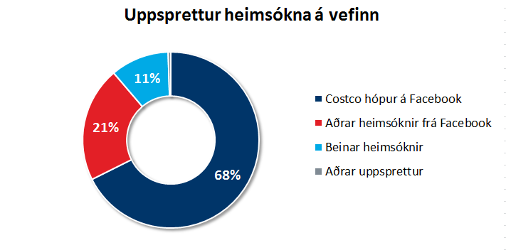

Vefgreining: fyrstu þúsund heimsóknirnar
Ég opnaði vefinn á föstudaginn. Síðan þá hefur hann fengið yfir 1.000 heimsóknir og ég er að sjálfsögðu himinlifandi með viðtökurnar. Þar sem ég hef gefið mig út fyrir að vera sérfróður um vefmælingar, þá er nú ekki úr vegi að ég rýni aðeins betur í gögnin!
Talan þúsund er vissulega myndarleg tala. En það er ekki þar með sagt að á bak við hana standi endilega þúsund einstaklingar. Það mætti til dæmis alveg ímynda sér að ég stæði sjálfur á bak við allar þessar heimsóknir. Í þessu tilfelli væri því eðlilegra að skoða fjölda gesta.
Samkvæmt Google Analytics, sem ég nota til að halda utan um umferðina, sóttu 983 aðilar vefinn heim fyrstu fjóra dagana. Þar sem það er nú yfirleitt ekki til siðs að flokka húsráðendur sjálfa sem gesti, myndi ég vilja byrja á því að undanskilja sjálfan mig. Þar sem ég hef prófað vefinn í ýmsum tækjum eru nokkrir þessara gesta ég sjálfur. Auk þess slæðast svo alltaf með óboðnir gestir – forrit sem eru að leita að öryggisholum til að bora sig í gegnum og annar sjálfvirkur búnaður, sem ég myndi vilja undanskilja. Ef ég geri það standa eftir 979 gestir.
En af hverju kom allt þetta fólk? Er fólk búið að vera bíða í ofvæni eftir vef um vefmælingar? Þótt það væri gaman að trúa því, þá er skýringin líkast til önnur og tengist hugsanlega greinarstúfi sem ég skrifaði um Costco, birti á vefnum og kynnti í heitasta Facebook hópi Íslands um þessar mundir.
Af gestunum 979 voru 76% eða 746 sem hófu heimsóknina á greininni. Langflestir þeirra eða 97% yfirgáfu vefinn strax að lestri loknum, sem styður þá tilgátu að það hafi verið Costco frekar en vefmælingarnar sem trekktu þá að. Þeir 23 sem kynntu sér annað efni á vefnum bætast við þá 233 sem komu inn eftir öðrum leiðum.

Þar sem vefurinn minn er í grunninn einnar síðu vefur (aðeins Costco greinin var á sér síðu), þarf að nota aðrar leiðir en síðuflettingar til að meta árangur. Google Analytics mælir ekki smelli og niðurhal, nema að gripið sé til sérstakra ráðstafana fyrst. Það gerir maður með einfaldri skriftu eða nýtir Google Tag Manager til að hlusta eftir þeim.
Af þeim 979 gestum sem heimsóttu vefinn nýtti einn sjötti sér leiðarkerfið til að skoða efni síðunnar. Önnur leið til að meta virkni væri að skoða hversu neðarlega notandinn fór á síðunni, þar sem við gefum okkur þá að því neðar sem notandinn fór, þeim mun áhugasamari sé hann, eða þá að mæla tímann sem notendur verja á síðunni. Langur tími er hinsvegar ekki alltaf til marks um vel heppnaða síðu, þvert á móti þá getur hann bent til þess að síðan sé óþarflega flókin.
Miðað við eðli þessa tiltekna vefs væri réttasta leiðin til að meta árangur að skoða hversu margir hafa samband við mig í kjölfarið og þá helst til að spyrja um eitthvað annað en Costco. 🙂 Það má til dæmis gera með því að smella á Netspjall í horninu hérna niðri til hægri, sem tengir þig beint við mig í gegnum Facebook Messenger eða skilja eftir umsögn hér fyrir neðan.